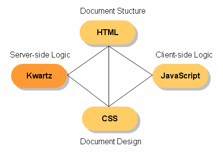

Kwartz 3.0 Users' Guide
last update: $Date$
Preface
This is the users' guide of Kwartz(*1), a template system which realized the concept of 'Independence of Presentation Logic'.
- (*1)
- Development of Kwartz had subsidized by Exploratory Software Project of IPA (Information-Technology Promotion Agency Japan).
Table of Contents
Introduction to Kwartz
What's Kwartz?
Kwartz(*2) is a template system which realized the concept of 'Independence of Presentation Logic'(IoPL). It means that Kwartz separates presentaion logics from both presentation data (typically HTML document) and business logics.
You know CSS (Cascading Style Sheet). CSS separates design from HTML file. In the same way, Kwartz separates presentation logics from HTML template. If you are familiar with CSS, you'll be also familiar with Kwartz.
The following figure show the relation of HTML, CSS, JavaScript, and Kwartz.
- HTML represents document structure.
- CSS represents document design.
- JavaScript represents client-side logics.
- Kwartz represents server-side presentation logics.
(Notice that Kwartz represents only presentation logics and not business logics.)

Kwartz-ruby is an implemenation of Kwartz in Ruby. There is a plan to implement Kwartz in PHP or Java.
In the following, the word 'Kwartz' means the specification of the template system and the word 'Kwartz-ruby' means the implementation of it in Ruby language.
- (*2)
- 'Kwartz' is pronounced like 'Quartz'.
Features Overview
Kwartz has the following features:
- Separates presentation logic from presentation data.
-
Using template systems such as Smarty, Velocity, XMLC, amrita, etc, you can separate HTML design from business logic as a template. With Kwartz, you can separate presentation logic from a template. In other words, Kwartz divides a template into 'presentation data' and 'presentation logic'. You need not mix presentation logic into HTML files nor main program.
- Very fast
-
Kwartz creates a script from a template (= presentation data and presentaion logic). All you have to do in main program is to call the output script. Because Kwartz doesn't use DOM trees or the like, it is both fast and light-weight.
- Multi-languages support
-
Kwartz can create output scripts for Ruby(eRuby), PHP, JSP(JSTL 1.2 & 1.1). Presentation logics are written in each language(*3). This approach gives you the power of the target language fully. For example, you can write Ruby on Rails helper method (such as
link_to,field_tag, and so on) directly in your template file. - Doesn't break HTML design at all
-
You must use directives like
{foreach ...}{/foreach}in Smarty or#foreach(...)in Jakarta Velocity. These directives break the HTML design of template. Kwartz doesn't break HTML design because Kwartz uses id or title attributes for marking in an HTML template. - Able to handle any text file
-
Kwartz uses an original template parser; not using an HTML or XML parser, it is able to handle any type of text file (HTML, PostScript, CSV, and so on). This also means that Kwartz can handle non-well-formed XML files, as well as well-formed XML files. This is an advantage of Kwartz against Enhydra XMLC or amrita, which handle only XML/HTML files.
- Auto-escape and Partial-escape
-
Kwartz can do sanitizing automatically. You don't need to write '
CGI.escapeHTML(var)' or 'htmlspecialchars($var)'. You are free to turn sanitizing on/off, as well specifying which parts of the template to sanitize.
- (*3)
- Previous version of Kwartz adopt original language and convert it to each target language(Ruby, PHP, JSTL, and so on). From Current version, it is required to write presentation logic in target language.
Simple Example
In Kwartz, a template is defined as both presentation data and presentation logic. They may be described in separate files.
This is an example of a presentation data file.
- '
id="list1"' means "I'll operate this element in presentation logic" (called 'marking' in Kwartz). - '
id="mark:item1"' is also an marking. Difference betweenid="mark:item1"andid="item1"is that id attribute in the former format is removed automatically and the latter format is leaved.
Presentation data file(example1.html):
<table>
<tr id="list1">
<td id="mark:item1">foo</td>
</tr>
</table>
And the following is an example of presentation logic. In presentation logic, you can operate on elements which are marked in presentation data.
- '
#list1 { ... }' represents an element marked with name 'list1' (= '<tr>...</tr>')- '
logic: { ... }' represents presentation logic of the element. - '
_stag' represents a start tag (= '<tr>'). - '
_cont' represents content(= '<td id="mark:item1">foo</td>'). - '
_etag' represents an end tag(= '</tr>'). - '
for var in list ...' is a Ruby code to loop. In this case, the element(= start-tag + content + end-tag) is looped.
- '
- '
#item1 { ... }' represents an element marked with name 'item1' (= '<td>...</td>').- '
value: expression;' represents that the content of the element is replaced by value ofexpression, which is value of a variablememberin this case.
- '
/* The element which is marked by 'id="list1"' */
#list1 {
logic: {
for member in @members
_stag # start tag
_cont # content
_etag # end tag
end
}
}
/* The element which is marked by 'id="mark:item1"' */
#item1 {
/* replace the content with value of a variable 'member' */
value: member;
}
(Don't forget the semicolon at the end of line especially for Ruby user!)
Kwartz generates eRuby script from the above files. This action is called 'compiling'.
$ kwartz -p example1.plogic example1.html > example1.rhtml
The following is the compiled eRuby script.
Notice that id="mark:item1" is removed automatically while id="list1" is leaved.
<table>
<% for member in @members %>
<tr id="list1">
<td><%= member %></td>
</tr>
<% end %>
</table>
Complex Example
Next is bordered table example which is a little complex than previous.
<table> <tr bgcolor="#CCCCFF" id="mark:list"> <td id="mark:name">foo</td> <td> <a href="mailto:foo@mail.com" id="mark:email">foo@mail.com</a> </td> </tr> </table>
The following is the presentation logic file. In the presentation logic, you should detect whether odd or even line in the iteration.
Presentation Logic (example2.plogic):
/*
* an element which is marked by 'id="mark:list"'
* - print value of a variable 'color' as bgcolor attribute value.
*/
#list {
attrs: "bgcolor" color;
logic: {
@members.each_with_index do |member, i|
color = i % 2 == 0 ? '#FFCCCC' : '#CCCCFF';
_stag # start tag
_cont # content
_etag # end tag
end
}
}
/*
* an element which is marked by 'id="mark:name"':
* - print value of member[:name] as content of the element.
*/
#name {
value: member[:name];
}
/*
* an element marked by 'id="mark:email"':
* - print value of member[:email] as contentn of the element.
* - print "mailto:" and member[:email] as href attribute value.
*/
#email {
value: member[:email];
attrs: "href" "mailto:#{member[:email]}";
}
(Don't forget the semicolon at the end of line especially for Ruby user!)
You will find that there is no HTML tag in the presentation logic and no logic in the presentation data. That is to say, Kwartz can separate presentation logic from presentation data.
$ kwartz -p example2.plogic example2.html > example2.rhtml
<table>
<% @members.each_with_index do |member, i| %>
<% color = i % 2 == 0 ? '#FFCCCC' : '#CCCCFF'; %>
<tr bgcolor="<%= color %>">
<td><%= member[:name] %></td>
<td>
<a href="<%= "mailto:#{member[:email]}" %>"><%= member[:email] %></a>
</td>
</tr>
<% end %>
</table>
Other Examples of Presentation Logic
Kwartz enables you to write complex presentation logic natulally. This section shows some examples. See Presentation Pattern Catalog for details.
- Iterate an element.
#list { logic: { for member in @members _stag _cont _etag end } }Or#list { logic: { for member in @members _elem # equivarent to _stag + _cont + _etag end } }
- Iterate only contents. This is useful for <dl></dl>.
#list { logic: { _stag for member in @members _cont end _etag } }
- Replace content of element by expression value.
#list { logic: { _stag print expr _etag } }Or#list { value: expr; }
- Replace element by exression value
#list { logic: { print expr } }Or#list { elem: expr; }
- Delete start-tag and end-tag, and leaves content only.
#list { logic: { _cont } }
- Delete elemnt. This is useful for delete dummy data.
#list { logic: { } }
- Replace element with other element.
#list { logic: { _element(foo) # expand other element marked with name 'foo' } }
- Replace element with other element's content.
#list { logic: { _content(foo) # expand content of other element } }
- Include complex presentation logics.
#list { logic: { i = 0 for member in @members i += 1 if i % 2 == 0 color = '#FFCCCC' else color = '#CCCCFF' end _elem # '_elem' is equivarent to _stag + _cont + _etag end } }
It is very important that tag/attribute names don't appear in presentation logic at all. This way, you don't need to change presentation logic files even if the tag/attribute names are changed in the presentation data.
Kwartz separates presentation logic from presentation data and main program.
Features Detail
RuleSet and Properties
Format of presentation logic in Kwartz is similar to CSS (Cascading Style Sheet).
- Presentation logic file is a set of Ruleset.
- Ruleset is a pair of selector and declarations.
- Declaration is a pair of property name and value.
The following rules are available in presesntation logic file. These are similar to CSS. If you are familiar with CSS, you'll be so with Kwartz.
- stag: expr;
- Replace start-tag by expression value.
- etag: expr;
- Replace end-tag by expression value.
- elem: expr;
- Replace elemnt by expression value.
- cont: expr;
- Replace content of element by expressin value.
- value: expr;
-
Equivarent to
cont: expr.
- attrs: 'attrname' expr;
-
Replace attribute value by expression.
The following is an example to specify some attributes.
#foo { attrs: 'href' item[:url], 'id' item[:id], 'class' classname; }
- append: expr;
-
Append expression value to tail of tag.
This is used especially to add 'checked="checked"', 'selected="selected"'
into the form control tag.
#checkbox1 { append: member[:age] > 18 ? ' checked="checked"' : ''; } #select_options { append: option[:value] == current_val ? ' selected="selected"' : ''; }
- remove: 'attr1', 'attr2', 'attr3';
- Remove the attributes from the element.
- logic: { ... }
- Logic of the element.
'stag:' and 'elem:' are useful especially for Ruby on Rails. The following is an examle to use Kwartz in Ruby on Rails.
<form id="form">
Name: <input type="text" id="member_name"><br>
Birthday: <select id="member_birth">
<option> - </option>
</select><br>
<input type="submit" id="submit">
</form>
#form {
stag: start_form_tag :action=>'new';
}
#member_name {
elem: text_field 'member', 'name';
}
#member_birth {
elem: date_select 'member', birth';
}
#submit {
elem: submit_to 'Submit';
}
$ kwartz -p form1.plogic form1.html <%= start_form_tag :action=>'new' %> Name: <%= text_field 'member', 'name' %><br> Birthday: <%= date_select 'member', birth' %><br> <%= submit_to 'Submit' %> </form>
Directives
Presentation logic may be embedded into presentation data in Kwartz. You can choose to separate or not to sepearate presentation logic from presentation data.
The reason to provide both solutions (separate or not) is choosability. Some preferes to separate presentation logic from presentaion data, and others may prefere to mix them. Both approaches have own advantages and disadvantages. Thus it is the user who determine which solution to adopt. Kwartz provides both approaches and you can select which to use. Kwartz doesn't enforce you to adopt a solution.
To embed presentation logic into presentation data, use directives. Directive is a command to embed presentation logic into presentation data. In Kwartz, 'title' attributes(*4) are used to describe directives.
The following is an example to use directives.
- Directive
title="for var in list"means to iterate the element. - Directive
title="value: expression"means to print value of expression as content of the element. - Directive
title="dummy:"means that the element is a dummy and is not printed out.
<table>
<tr title="for member in @members">
<td title="value: member.name">foo</td>
<td>
<a href="mailto:<%= member.email %>"
title="value: member.email">foo@mai.com</a>
</td>
</tr>
<tr title="dummy:">
<td>bar</td>
<td><a href="mailto:bar@mail.org">bar@mail.org</a></td>
</tr>
<tr title="dummy:">
<td>baz</td>
<td><a href="mailto:baz@mail.net">baz@mail.net</a></td>
</tr>
</table>
$ kwartz -l eruby directive1.html > directive1.rhtml
<table>
<% for member in @members do %>
<tr>
<td><%= member.name %></td>
<td>
<a href="mailto:<%= member.email %>"><%= member.email %></a>
</td>
</tr>
<% end %>
</table>
If the first character of target attribute is a space, Kwartz recognize it as non-directive(*5).
<span title="value: expr1">foo</span> <span title=" value: expr2">bar</span>
$ kwartz directive2.html <span><%= expr1 %></span> <span title="value: expr2">bar</span>
Directives are different in each target language. For example, foreach loop is 'for item in list' in eRuby, 'foreach($list as $item)' in PHP, 'forEach(item in list)' in JSTL. See reference manual for details about directives.
Escape
Kwartz supports Automatic-escape and Partial-escape/unescape.
- If command-line option '
-e' is specified, values of 'value: expr' are escaped. (Automatic-escape) - '
Value: expr' always escapes value even when '-e' is not specified. (Partial-escape) - '
VALUE: expr' always doesn't escapes value even when '-e' is specified. (Partial-unescape)
<tr> <td id="mark:val1">foo</td> <td id="mark:val2">bar</td> <td id="mark:val3">baz</td> </tr>
#val1 {
value: expr;
}
#val2 {
Value: expr;
}
#val3 {
VALUE: expr;
}
-e' option.$ kwartz -p escape1.plogic escape1.html <tr> <td><%= expr %></td> <td><%=h expr %></td> <td><%= expr %></td> </tr>
-e' option.$ kwartz -e -p escape1.plogic escape1.html <tr> <td><%=h expr %></td> <td><%=h expr %></td> <td><%= expr %></td> </tr>
In the same way, 'Stag:', 'Etag:', 'Elem:',
'Cont:', 'Attrs:', and 'Append:' properties are
always escaped, 'STAG:', 'ETAG:', 'ELEM:',
'CONT:', 'ATTRS:', and 'APPEND:' properties are
never escaped.
Escape function or method is different for each tareget language. 'h()' is used in eRuby and 'htmlspecialchars()' in PHP. JSTL prints escaped value in default.
Directives title="Value: expr", title="Attr: 'name' expr", and title="Append: expr" always escape expression value even when the command-line option '-e' is not specified.
Directives title="VALUE: expr:", title="ATTR: 'name' expr", and title="APPEND: expr" doesn't escape expression value even when the command-line option '-e' is specified.
Configuration option PROPERTY_ESCAPE in 'kwartz/config.rb' determines whether values are escaped or not in default. If this is true then Kwartz will escape values in default.
Multi-language
Kwartz-ruby now supports the following programming language.
- Ruby, eRuby(ERB, Erubis)
- PHP
- JSP (JSTL 1.1 and 1.2)
- ePerl [experimental]
Presentation logics must be described in each target language. It means that if you have wrote presentation logics in Ruby, they were not reusable for PHP project (but you can get full-power of Ruby in presentation logic).
The followings are examples of Ruby, eRuby, PHP, JSP, and ePerl.
<html>
<body>
<table>
<tr bgcolor="#CCCCFF" id="mark:row">
<td id="mark:name">Foo</td>
<td id="mark:mail">foo@mail.com</td>
</tr>
<tr bgcolor="#FFCCCC" id="dummy:row1">
<td>Bar</td>
<td>bar@mail.net</td>
</tr>
<tr bgcolor="#CCCCFF" id="dummy:row2">
<td>Baz</td>
<td>baz@mail.org</td>
</tr>
</table>
</body>
</html>
#row {
attrs: "bgcolor" color;
logic: {
@list.each_with_index do |user, i|
color = i % 2 == 1 ? '#FFCCCC' : '#CCCCFF'
_elem
end
}
}
#name {
Value: user[:name];
}
#mail {
value: user[:mail];
}
#row {
attrs: "bgcolor" $color;
logic: {
$i = 0;
foreach ($list as $user) {
$color = ++$i % 2 == 0 ? '#FFCCCC' : '#CCCCFF';
_elem();
}
}
}
#name {
Value: $user['name'];
}
#mail {
value: $user['mail'];
}
#row {
attrs: "bgcolor" color;
logic: {
<c:forEach var="user" items="${list}" varStatus="loop">
<c:set var="color" value="${loop.index % 2 == 0 ? '#FFCCCC' : '#CCCCFF'}"/>
_elem
</c:forEach>
}
}
#name {
Value: user.name;
}
#mail {
value: user.mail;
}
#row {
attrs: "bgcolor" $color;
logic: {
$i = 0;
foreach ($user in @list) {
$color = ++$i % 2 == 0 ? '#FFCCCC' : '#CCCCFF';
_elem();
}
}
}
#name {
Value: $user{'name'};
}
#mail {
value: $user{'mail'};
}
$ kwartz -l eruby -p table1.ruby.plogic table1.html > table1.rhtml $ kwartz -l ruby -p table1.ruby.plogic table1.html > table1.rb $ kwartz -l pierubis -p table1.ruby.plogic table1.html > table1.pierubis $ kwartz -l php -p table1.php.plogic table1.html > table1.php $ kwartz -l jstl -p table1.jstl.plogic table1.html > table1.jsp $ kwartz -l eperl -p table1.eperl.plogic table1.html > table1.iphtml
<html>
<body>
<table>
<% @list.each_with_index do |user, i| %>
<% color = i % 2 == 1 ? '#FFCCCC' : '#CCCCFF' %>
<tr bgcolor="<%= color %>">
<td><%=h user[:name] %></td>
<td><%= user[:mail] %></td>
</tr>
<% end %>
</table>
</body>
</html>
_buf = ""; _buf << "<html>
<body>
<table>\n";
@list.each_with_index do |user, i|
color = i % 2 == 1 ? '#FFCCCC' : '#CCCCFF'
_buf << " <tr bgcolor=\""; _buf << (color).to_s; _buf << "\">
<td>"; _buf << ERB::Util.h(user[:name]); _buf << "</td>
<td>"; _buf << (user[:mail]).to_s; _buf << "</td>
</tr>\n";
end
_buf << " </table>
</body>
</html>\n";
; _buf
<html>
<body>
<table>
<?rb @list.each_with_index do |user, i| ?>
<?rb color = i % 2 == 1 ? '#FFCCCC' : '#CCCCFF' ?>
<tr bgcolor="$!{color}">
<td>${user[:name]}</td>
<td>$!{user[:mail]}</td>
</tr>
<?rb end ?>
</table>
</body>
</html>
<html>
<body>
<table>
<?php $i = 0; ?>
<?php foreach ($list as $user) { ?>
<?php $color = ++$i % 2 == 0 ? '#FFCCCC' : '#CCCCFF'; ?>
<tr bgcolor="<?php echo $color; ?>">
<td><?php echo htmlspecialchars($user['name']); ?></td>
<td><?php echo $user['mail']; ?></td>
</tr>
<?php } ?>
</table>
</body>
</html>
<%@ taglib prefix="c" uri="http://java.sun.com/jsp/jstl/core" %>
<%@ taglib prefix="fn" uri="http://java.sun.com/jsp/jstl/functions" %>
<html>
<body>
<table>
<c:forEach var="user" items="${list}" varStatus="loop">
<c:set var="color" value="${loop.index % 2 == 0 ? '#FFCCCC' : '#CCCCFF'}"/>
<tr bgcolor="${color}">
<td>${user.name}</td>
<td>${user.mail}</td>
</tr>
</c:forEach>
</table>
</body>
</html>
<html>
<body>
<table>
<? $i = 0; !>
<? foreach ($user in @list) { !>
<? $color = ++$i % 2 == 0 ? '#FFCCCC' : '#CCCCFF'; !>
<tr bgcolor="<?= $color !>">
<td><?= encode_entities($user{'name'}) !></td>
<td><?= $user{'mail'} !></td>
</tr>
<? } !>
</table>
</body>
</html>
Span Tag Deletion
Kwartz regards span tags which contain only directives as dummy tags and delete them automatically when command-line option '--delspan' is specified.
<h1><span id="mark:title">title</span></h1> Hello <span title="value: user">World</span>!
#title {
value: title;
}
$ kwartz -p delspan1.plogic --delspan delspan1.html <h1><%= title %></h1> Hello <%= user %>!
The span tags are not removed when they have other attributes.
Hello <span title="value: user" style="color:black">World</span>!
$ kwartz --delspan delspan2.html Hello <span style="color:black"><%= user %></span>!
Import Presentation Logic File
'@imort "filename.plogic"' imports filename.plogic.
This is useful to share common presentation logic in many files.
#link_to_new {
elem: start_link_tag :action=>'new';
}
#link_to_show {
elem: start_link_tag :action=>'show', :id=>@member;
}
#link_to_edit {
elem: start_link_tag :action=>'edit', :id=>@member;
}
#link_to_list {
elem: start_link_tag :action=>'list';
}
#link_to_destroy {
stag: start_link_tag({:action=>'destroy', :id=>@member}, :confirm=>'Are you sure?');
}
<p> Name: <span id="mark:name">foo</span> <br> Email: <span id="mark:email">foo@mail.com</span> <br> </p> <a href="#" id="link_to_edit">Edit this member</a> | <a href="#" id="link_to_new">Create new member</a> | <a href="#" id="link_to_list">Return to list</a>
@import 'link_to.plogic';
#name {
Value: @member.name;
}
#email {
Value: @member.email;
}
$ kwartz -p show.plogic show.html <p> Name: <span><%=h @member.name %></span> <br> Email: <span><%=h @member.email %></span> <br> </p> <%= start_link_tag :action=>'edit', :id=>@member %> | <%= start_link_tag :action=>'new' %> | <%= start_link_tag :action=>'list' %>
Import Elements in Other Files
Command-line option '-i filename,...' imports element definitions form other files.
<form> <div id="mark:form_content"> Name: <input type="text"><br> Password: <input type="password"><br> </div> <input type="submit"> </form>
<form action="/new"> <div id="mark:placeholder"></div> <input type="submit" value="Create"> </form>
/* use element which is defined other file */
#placeholder {
logic: {
_content(form_content)
}
}
$ kwartz -i form.html -p new.plogic new.html <form action="/new"> Name: <input type="text"><br> Password: <input type="password"><br> <input type="submit" value="Create"> </form>
Extract Element
Command option '-X name' extracts element marked as name and command option '-x name' extracts content of element.
<html> <body> <div id="mark:content"> <h1>Show</h1> <p>Name: <span id="mark:name">foo</span></p> <p>Email: <span id="mark:email">foo@mail.com</span></p> </div> </body> </html>
#name {
value: user.name;
}
#email {
value: user.email;
}
$ kwartz -X content -p show.plogic show.html <div> <h1>Show</h1> <p>Name: <span><%= user.name %></span></p> <p>Email: <span><%= user.email %></span></p> </div>
$ kwartz -x content -p show.plogic show.html <h1>Show</h1> <p>Name: <span><%= user.name %></span></p> <p>Email: <span><%= user.email %></span></p>
Print Statement
Print statement is available in 'logic:' property.
<ul> <li id="items">foo</li> </ul>
#items {
logic: {
for item in list
_stag
print item
_etag
end
}
}
$ kwartz -l eruby -p print-stmt.eruby.plogic print-stmt.html <ul> <% for item in list %> <li id="items"><%= item %></li> <% end %> </ul>
#items {
logic: {
foreach ($list as $item) {
_stag();
print($item);
_etag();
}
}
}
$ kwartz -l php -p print-stmt.php.plogic print-stmt.html
<ul>
<?php foreach ($list as $item) { ?>
<li id="items"><?php echo $item; ?></li>
<?php } ?>
</ul>
#items {
logic: {
<c:forEach var="item" items="${list}">
_stag
print item
_etag
</c:forEach>
}
}
$ kwartz -l jstl -p print-stmt.jstl.plogic print-stmt.html
<%@ taglib prefix="c" uri="http://java.sun.com/jsp/jstl/core" %>
<%@ taglib prefix="fn" uri="http://java.sun.com/jsp/jstl/functions" %>
<ul>
<c:forEach var="item" items="${list}">
<li id="items">${item}</li>
</c:forEach>
</ul>
$ kwartz -l jstl -p print-stmt.jstl.plogic --jstl=1.1 print-stmt.html
<%@ taglib prefix="c" uri="http://java.sun.com/jstl/core" %>
<ul>
<c:forEach var="item" items="${list}">
<li id="items"><c:out value="${item}"/></li>
</c:forEach>
</ul>
It is recommended to use 'elem:', 'stag:', 'etag:', 'cont:', or 'value:' instead of print statement because they can escape or unescape exression value.
Add Code at Beginning/End of Document
'#DOCUMENT' is a special selector which represents the document. In '#DOCUMENT', properties 'begin:' and 'end:' are available to add codes at beginning/end of document.
<html> <body>hello</body> </html>
#DOCUMENT {
begin: {
title = _context[:title]
user = _context[:user]
}
end: {
print "<!--end-->\n"
}
}
$ kwartz -p document-test.plogic document-test.html <% title = _context[:title] %> <% user = _context[:user] %> <html> <body>hello</body> </html> <%= "<!--end-->\n" %>
Ruby on Rails Support
This section shows how to use Kwartz with Ruby on Rails. See 'examples/rails1' and 'examples/rails2' for examples.
Support of Ruby on Rails
If you want to use Kwartz with Ruby on Rails, add the following code in your 'app/controllers/application.rb' and restart web server.
require 'kwartz/helper/rails'
ActionView::Base.register_template_handler('html', Kwartz::Helper::RailsTemplate)
#Kwartz::Helper::RailsTemplate.lang = 'rails' # or eruby/ruby/erubis/pierubis
#Kwartz::Helper::RailsTemplate.pdata_suffix = '.html'
#Kwartz::Helper::RailsTemplate.plogic_suffix = '.plogic'
#Kwartz::Helper::RailsTemplate.default_properties = { :escape=>false }
#Kwartz::Helper::RailsTemplate.use_cache = true
#Kwartz::Helper::RailsTemplate.debug = true
Layout files ('app/views/layouts/xxx.{html,plogic}') are also available. The following is an example to use layout files.
<html>
<body>
<h1 id="page_title"></h1>
<div id="page_content">
<ul id="mark:list">
<li id="mark:item"></li>
</ul>
</div>
</body>
</html>
#list {
logic: {
@list.each do |item|
_elem
end
}
}
#item {
value: item;
}
<!DOCTYPE HTML PUBLIC "-//W3C//DTD HTML 4.01 Transitional//EN">
<html>
<head>
<title id="mark:header_title"></title>
<meta http-equiv="Content-Type" content="text/html; charset=UTF-8">
</head>
<body>
<h1 class="title" id="replace_content_with_content:page_title">...page title...</h1>
<div id="replace_element_with_content:page_content">
...page content...
</div>
<p>copyright© 2006 kuwata-lab.com all rights reserved.</p>
</body>
</html>
#header_title {
cont: 'Member: ' + controller.action_name;
}
See the 'examples/rails2' directory for example of using Kwartz with Ruby on Rails.
link_to() method in Ruby on Rails
link_to() method in Ruby on Rails is a little incompatible with Kwartz
because you must specify link label in both presentation data and presentation logic.
It's not DRY.
<a href="#" id="mark:link_to_new">Create new recipe</a>
#link_to_new {
elem: link_to 'Create new recipe', :action=>'new';
}
It is recommended to use start_link_tag() and start_remote_link_tag() instead of link_to() and link_to_remote() because they print only start tag of anchors.
<a href="#" id="mark:link_to_new">Create new recipe</a>
#link_to_new {
stag: start_link_tag :action=>'new';
}
The following is the definition of start_link_tag() and start_remote_link_tag(). They are defined in Kwartz::Helper::ActionViewHelper module which is defined in 'kwartz/helper/rails.rb'.
module Kwartz::Helper::ActionViewHelper
def start_link_tag(options = {}, html_options = nil, *parameters_for_method_reference)
s = link_to('', options, html_options, *parameters_for_method_reference)
s.sub!(/<\/a>\z/, '')
s
end
alias anchor start_link_tag
def start_link_remote_tag(options = {}, html_options = {})
s = link_to_remote(options, html_options)
s.sub!(/<\/a>\z/, '')
s
end
alias anchor_remote start_link_remote_tag
end
You can use these helper methods if you include Kwartz::Helper::ActionViewHelper in your ApplicationHelper module.
require 'kwartz/helper/rails' module ApplicationHelper include Kwartz::Helper::ActionViewHelper end
Scaffold Kwartz Template
There is no 'generate scaffold' script for Kwartz. Instead, use Kwatable.
Kwatable|http://kwatable.rubyforge.net}} is a script to generate severail files (SQL, DTO, Kwartz template, and so on) from table definition file. It's more sophisticated than Rails' scaffold generating script.
Rails Helper Methods
(Notice: this is experimental feature.)
It is able to embed Rails' helper method in title attribute.
## text_field, password_field <input type="text" size="10" maxsize="20" title="text_field 'user', 'name'"> => <%= text_field 'user', 'name', :size=>10, :maxsize=>20 %> <input type="text" name="user[name]" title="text_field :size=>10"> => <%= text_field "user", "name", :size=>10 %> <input type="text" id="user_name" size="10" title="text_field"> => <%= text_field "user", "name", :size=>10 %> ## link_to, link_to_remote <a href="#" title="link_to :action=>'list'">Show list</a> => <%= link_to 'Show list', :action=>'list' %> ## start_link_tag, start_remote_link_tag <a href="#" title="start_link_tag :action=>'list'">Show list</a> => <%= start_link_tag 'action'=>'list' %>Show list</a> ## mail_to <a href="mail:www@example.com" title="mail_to">admin</a> => <%= mail_to "www@example.com", "admin" %> ## form_tag <form action="show" title="form_tag :id=>2"> ... </form> => <%= form_tag :action=>"show", :id=>2 %> ... </form> ## submit_tag <input type="submit" value="OK" title="submit_tag"> => <%= submit_tag "OK" %> ## text_area <textarea cols="30" rows="3" id="user_desc" title="text_area"></textarea> => <%= text_area "user", "desc", :cols=>30, :rows=>3 %> <textarea cols="30" rows="3" name="user[desc]" title="text_area"></textarea> => <%= text_area "user", "desc", :cols=>30, :rows=>3 %> ## hidden_field <input type="hidden" id="user_id" title="hidden_field"> => <%= hidden_field "user", "id" %> <input type="hidden" name="user[id]" title="hidden_field"> => <%= hidden_field "user", "id" %> ## check_box <input type="checkbox" id="user_chk1" title="check_box"> => <%= check_box "user", "chk1" %> <input type="checkbox" name="user[chk2]" title="check_box"> => <%= check_box "user", "chk2" %> ## radio_button <input type="radio" id="user_radio" value="val1" title="radio_button"> => <%= radio_button "user", "radio", "val1" %> <input type="radio" name="user[radio]" value="val2" title="radio_button"> => <%= radio_button "user", "radio", "val2" %> ## select, collection_select, country_select, time_zone_select, date_select, datetime_select <select name="user[birth]" title="date_select :start_year=>1970"> <option value="2000">2000</option> </select> => <% date_select "user", "birth", :start_year=>1970 %> ## image_tag, link_image_to, link_to_image <img src="foo.gif" alt="text" width="20" heigth="10" title="image_tag :size=>'30x40'"> => <%= image_tag "foo.gif", :alt=>"text", :size=>'30x40' %>
Other Topics
Restrictions around presentation logic
There are several restrictions in presentation logic file.
- Position in which comment '
/* ... */' is available is limited. In the following example, 'value:' property will be error because string from 'expr;' to the end of comment is regared as argument of 'value:' property./* this comment is ok */ #foo { /* this comment is ok */ value: expr; /* this comment is NG! */ logic: { /* this comment will be Ruby syntax error! */ for item in list # ruby comment is OK in 'logic:' property _stag _cont _etag end } }
- '_stag', '_cont', '_etag', '_elem', '_element()', and '_content()' must be placed
one in per line, because Kwartz-ruby scans 'logic:' property with regular expression
pattern such as '/^\s*_(stag|cont|etag|element|content)(\(.*\))\s*$/' or so.
#foo { logic: { # OK if x > 0 _elem end # NG (parse failed) _elem if x > 0 } }
- The number of '{' and '}' must be equal in 'logic:' property.
#foo { logic: { str = "{" # this will be parse error _elem } } #bar { logic: { str = "{" # add dummy '}' in comment! _elem } }
- '@import "file.plogic"' should be at the beginning of presentation logic file.
/* OK */ @import 'file1.plogic'; #foo { } /* NG */ @import 'file2.plogic';
Restrictions around presentation data
Kwartz parses presentation data file by regular expression pattern matching. It means that Kwartz doesn't use HTML parser nor XML parser for parsing presentation data. This approach enables Kwartz to handle any type of text file, and also brings the following restrictions to Kwartz.
- Cannot omit end tag if id attribute is specified.
<!-- Kwartz cannot parse the following because </li> is omitted. --> <ul> <li id="foo">foo </ul>
An Element which doesn't have any content is to be written as an empty tag such as<foo id="..."/>.
- However,
<input>,<br>,<meta>,<img>, and<hr>are allowed to omit end tag. And these doesn't have to be written as an empty tag.<!-- </input/> is omitted but Kwartz can parse correctly. --> <input type="text" name="user" id="user">
Configuration option PROPERTY_NOEND lists these tag names in file 'kwartz/config.rb'. Upper-case and lower-case are distinguished.
- Attribute values should be surrounded with '
"'.<!-- Kwartz fails parsing because attribute value is not surrounded with '"'. --> <h1 id="value:title" class=title>title</h1>
Makefile and Rakefile
The followings are examples of Makefile, Rakefile, Rantfile, and Rookbook.
.SUFFIXES: .rhtml .html .plogic ALL = file1.rhtml file2.rhtml file3.rhtml LAYOUT = layout.html default: $(ALL) %.rhtml: %.html %.plogic kwartz -l eruby -p $*.plogic $*.html > $@ file3.rhtml: file3.html file3.plogic $(LAYOUT) kwartz -p file3.plogic -L $(LAYOUT) file3.html > file3.rhtml
all = ["file1.rhtml", "file2.rhtml", "file3.rhtml"]
layout = 'layout.html'
task :default => all
rule '.rhtml' => ['.html', '.plogic'] do |t|
pdata, plogic = t.sources
sh "kwartz -l eruby -p #{plogic} #{pdata} > #{t.name}"
end
file 'file3.rhtml' => ["file3.html", "file3.plogic", layout] do |t|
pdata, plogic, layout = t.prerequisites
sh "kwartz -p #{plogic} -L #{layout} #{pdata} > #{t.name}"
end
all = ["file1.rhtml", "file2.rhtml", "file3.rhtml"]
layout = 'layout.html'
task :default => all
gen Rule, ".rhtml" => [".html", ".plogic"] do |t|
pdata, plogic = t.prerequisites
sys "kwartz -p #{plogic} #{pdata} > #{t.name}"
end
file "file3.rhtml" => ["file3.html", "file3.plogic", layout] do |t|
pdata, plogic, layout = t.prerequisites
sys "kwartz -p #{plogic} -L #{layout} #{pdata} > #{t.name}"
end
properties:
- layout : layout.html
parameters:
- all : [ file1.rhtml, 'file2.rhtml', file3.rhtml ]
- rook_product: $(all)
recipes:
- product: *.rhtml
ingreds: [ $(1).html, $(1).plogic ]
method*: |
pdata, plogic = @ingreds
sys "kwartz -p #{plogic} #{pdata} > #{@product}"
- product: file3.rhtml
ingres: [ file3.html, file3.plogic, $(layout) ]
method*: |
pdata, plogic, layout = @ingreds
sys "kwartz- p #{plogic} -L $(layout) #{pdata} > #{@product}"
Use Kwartz as Library
If you want to use Kwartz library in your Ruby script, use Kwartz::Main class.
require 'kwartz'
require 'kwartz/main'
argv = %w[-p hello.plogic -L layout.html hello.html]
main = Kwartz::Main.new(argv)
output = main.execute()
File.open('hello.rhtml', 'w') { |f| f.write(output) }